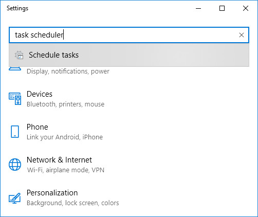
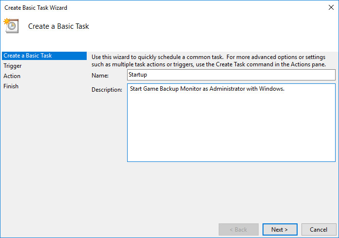
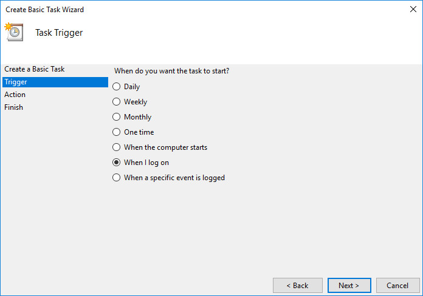
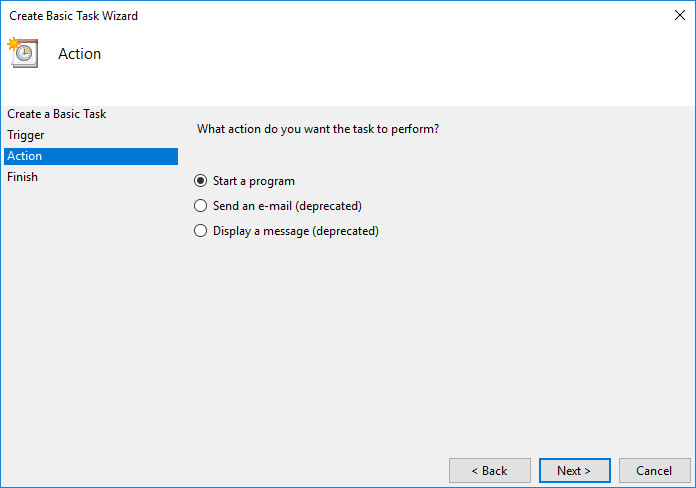
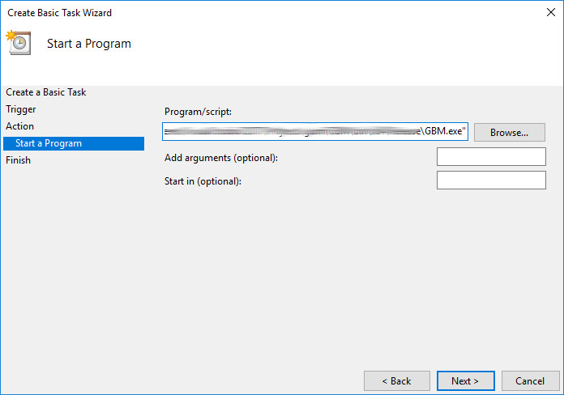
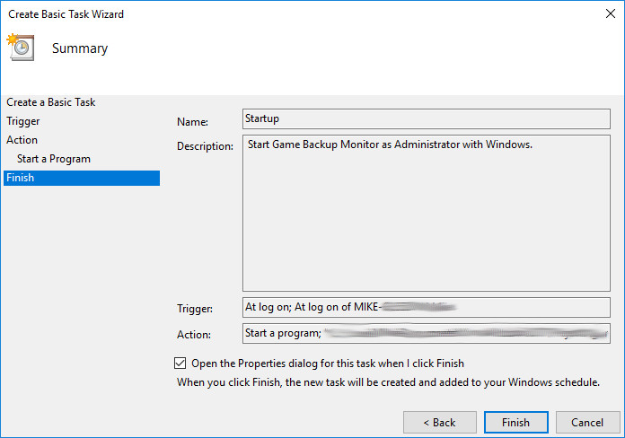
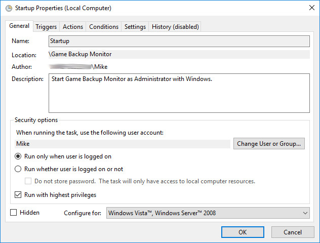
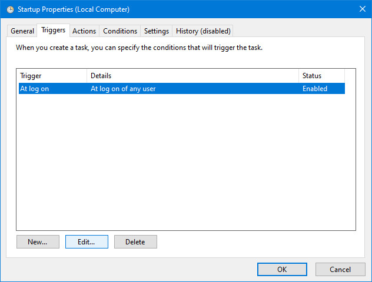
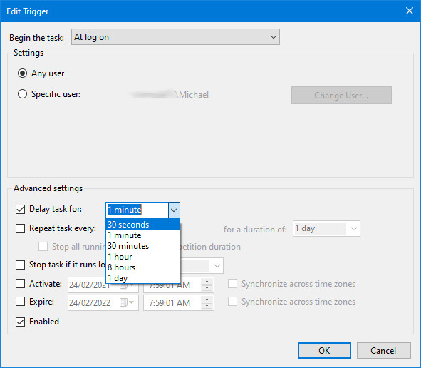

Using Task Scheduler to start Game Backup Monitor
This page will describe how to start Game Backup Monitor with Windows as Administrator with an optional delay.
These instructions are for Windows 10, they will differ slightly on other versions of Windows.
- Disable "Start with Windows" in Game Backup Monitor.
- Open Windows Settings, type "Task Scheduler" in the search and choose the "Schedule tasks" option when it appears.
 - Right-click on the "Task Scheduler Library" folder and choose "New Folder..." from the menu.
- Enter "Game Backup Monitor" in the new folder window and click OK.
- Right-click on the "Game Backup Monitor" folder and choose "Create Basic Task..." to open the new task window.
- Enter "Startup" as the name of the task and any description you'd like. Click Next to move to the Trigger section.
 - Choose "When I log on" and click Next to move to the Action section.
 - Choose "Start a program" and click Next.
 - Click the "Browse..." button and navigate to the folder where GBM is installed, choose the GBM.exe file. Click Next.
 - The final page shows a summary. Tick the "Open the Properties dialog for this task when I click Finish" checkbox. Click Finish.
 - The properties window will appear. Tick the "Run with highest privileges" checkbox to have GBM startup as Administrator. The next two steps are optional, you can click OK here and move to step #14 if you're finished.
 - You may also want to set a short delay on the startup of GBM, this can improve the performance of Windows on a fresh boot. Click the "Triggers" tab, then the "Edit" button.
 - Tick the "Delay task for:" checkbox and choose a desired time for the delay. Click OK to close the trigger window and OK again to close the properities.
 - Close Task Scheduler.